Chapter 5 Results
5.1 The following plot shows the top 20 countries with the highest GDP and their CO2 emission over the years in a moving plot
get_top_polluter <- function(list_of_countries_to_check,n=5)
{
table = data.frame()
vec <- vector()
for (cc in list_of_countries_to_check)
{
cc_df = get_data_from_api("EN.ATM.CO2E.KT",cc)
cc_df$continent <- countrycode(sourcevar = cc_df[, "country_name"],
origin = "country.name",
destination = "continent")
total_emissions = sum(cc_df$value)
table = rbind(table,cc_df)
vec = rbind(vec,c(total_emissions,cc))
}
vec <- list(vec)
lapply(vec, sort)
top_n = lapply(vec,head,n=n)
fig <- table %>%
plot_ly(
y=~value,
x=~year,
size = ~value,
frame = ~year,
color = ~continent,
text=~country_name,
hoverinfo = "text",
type = 'scatter',
mode = 'markers'
)
fig <- fig %>% layout(
title = "CO2 Emission (kt) of Top 20 Largest Countries",
xaxis=list(
title = "Year"),
yaxis = list(title = "CO Emissions (in kt)")
)
print(fig)
plt <- ggplot(data=table,aes(x=year,
y=value,
group=country_name,
color=country_name))+
geom_line()+
labs(x = "Year",
y="CO2 Emissions in kt",
title="CO2 Emission (kt) of Top 20 Largest Economies")
print(plt)
top_n = tail(unlist(top_n),n)
return (top_n)
}
top_n = get_top_polluter(countries_list)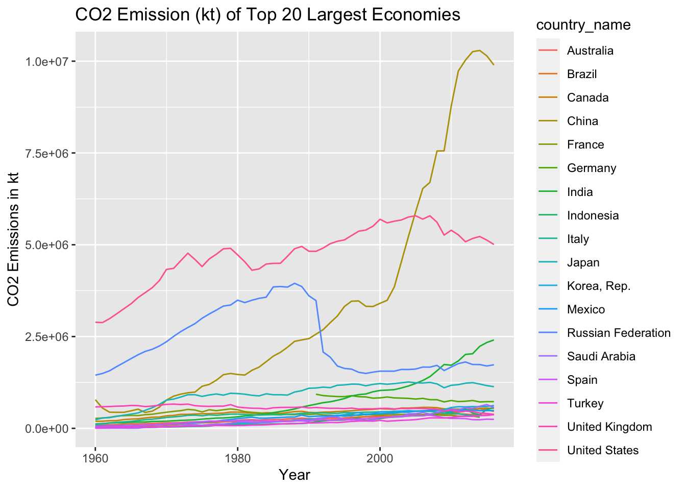
- We can see that until late 1980s and early 1990s the countries that emitted the largest amount of CO2 are heavily industrialized countries in Europe and Americas (USA and Russia).
- As the countries in Asia (China and India) with large populations started to industrialize in the 1990s their CO2 emissions steadily increased.
- China and India overtook Russia by early and mid 2000s respectively and China became the largest emitter of CO2 overtaking the United States in 2005.
- The above plot was originally done as a moving plot using plotly; however, it cannot render to HTML. The code for the interactive plotly graph in the function but the plot is not displayed.
5.2 The following graphs shows some distribution of possible producers of CO2 over different years 1975,1985,1995,2005,2014
get_all_data <-function(countries,data_names)
{
table = data.frame()
for (dn_tuple in data_names)
{
dn = dn_tuple[1]
dt = dn_tuple[2]
for (cc in countries)
{
cc_data = get_data_from_api(dn,cc)
cc_data["DataType"] = dt
table = rbind(table,cc_data)
}
}
return (table)
}
data_names <- list(c("EN.CO2.TRAN.ZS","Transportation"),c("EN.CO2.MANF.ZS","Manufacturing and Construction"),c("EN.CO2.ETOT.ZS","Electricity and Heat"),c("EN.CO2.BLDG.ZS","Buildings"),c("EN.CO2.OTHX.ZS","Others"))
t = get_all_data(top_n,data_names)
# print(t)
years = c(1975,1985,1995,2005,2014)
for (y in years){
st= subset(t, year==y)
p<-ggplot(data = st, aes(country_code, value, fill = DataType)) +
ggtitle("Sources CO2 of the Top 5 CO2 Contributors",y)+
geom_bar(stat = "identity", position = "dodge")+xlab("Country")+ylab("% of total")
print(p)
}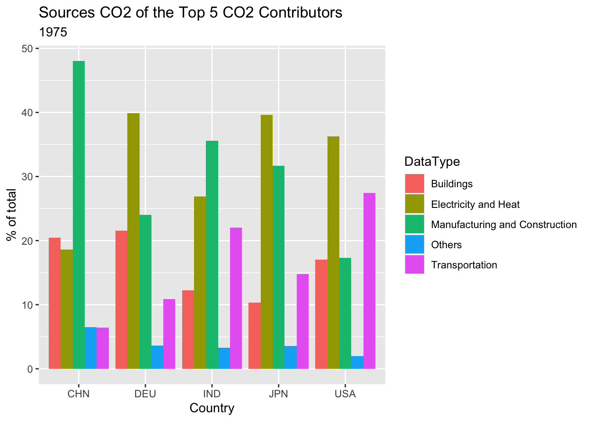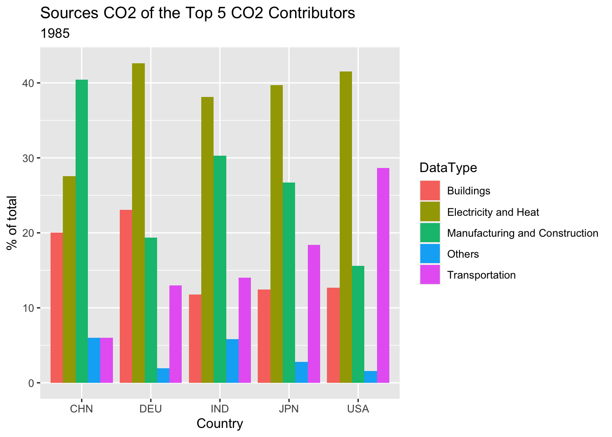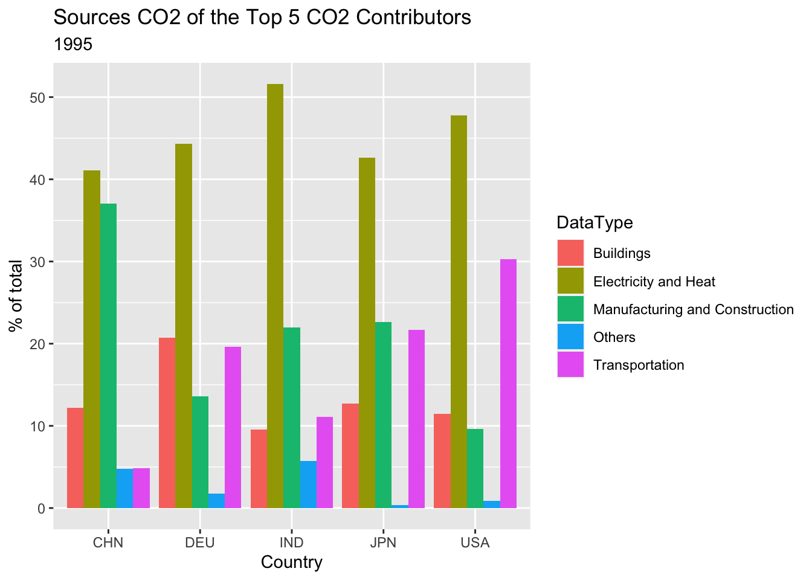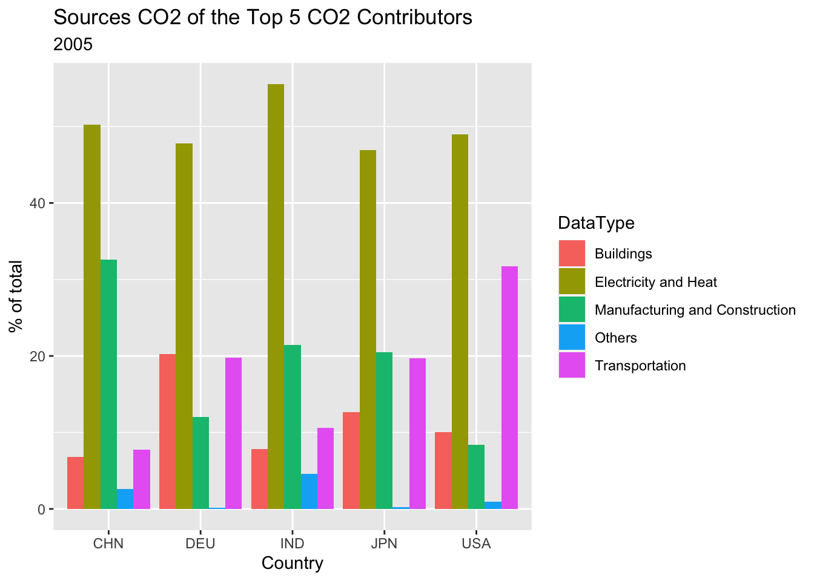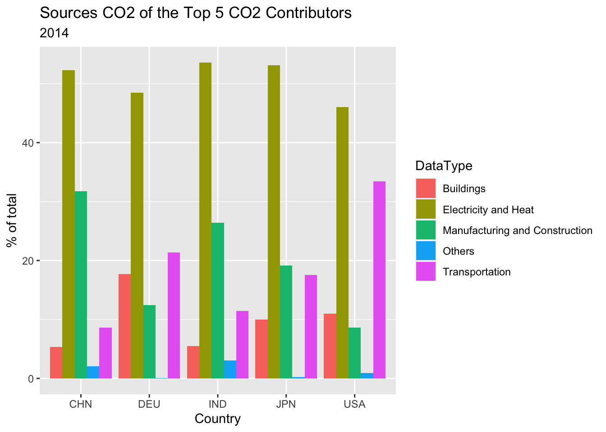
- We analized different activities that contribute to CO2 emissions in the 5 highest CO2 emitting countries in 5 different years spread across 5 decades.
- In 1970s the main activity resulting in CO2 emissions for industrialized countries such as US, Japan was generating electricity and heat where as for countries such as India and China it was from manufacturing and industry.
- By 1990s the main CO2 generating activity for all the countries in the top 5 was generating electricity and heat.
- Note: The data from Russia is missing in the years 1975 and 1985.
5.3 How electricity is produced
Since a large percent of CO2 emission comes from the production of electricity and heat, the following cleveland dot plot shows the percentage of different methods of electricity production.
theme_dotplot <- theme_bw(14) +
theme(axis.text.y = element_text(size = rel(.75)),
axis.ticks.y = element_blank(),
axis.title.x = element_text(size = rel(.75)),
panel.grid.major.x = element_blank(),
panel.grid.major.y = element_line(size = 0.5),
panel.grid.minor.x = element_blank())
data_names <- list(c("EG.ELC.PETR.ZS","Oil"),c("EG.ELC.NUCL.ZS","Nuclear"),c("EG.ELC.NGAS.ZS","Natural Gas"),c("EG.ELC.HYRO.ZS","Hydro"),c("EG.ELC.COAL.ZS","Coal"))
t = get_all_data(top_n,data_names)for (y in years){
st= subset(t, year==y)
p<-ggplot(st,
aes(value, fct_reorder2(country_name, DataType, value, .desc = FALSE),
color = DataType)) +
geom_point() + ggtitle("Electricity Produced from Different Sources Distribution",y) +xlab("%")+ ylab("Country")+theme_dotplot
print(p)
}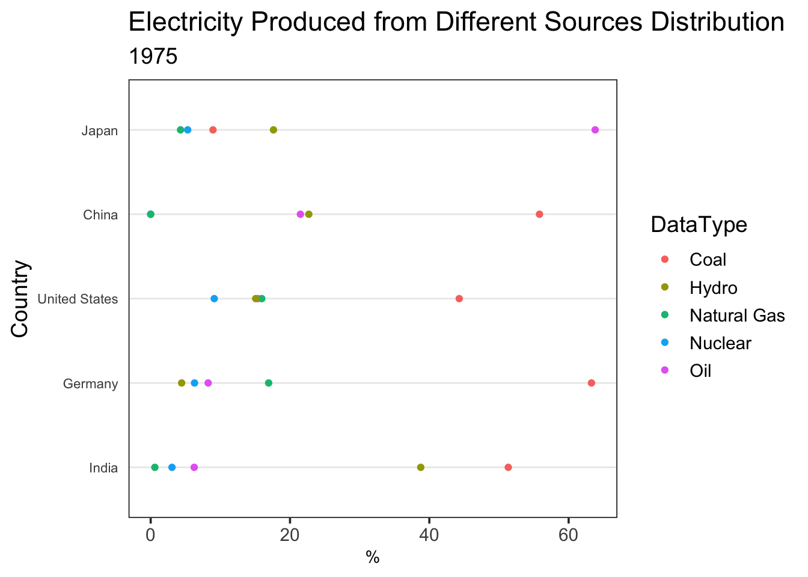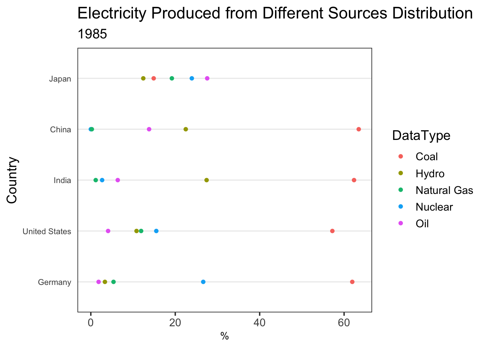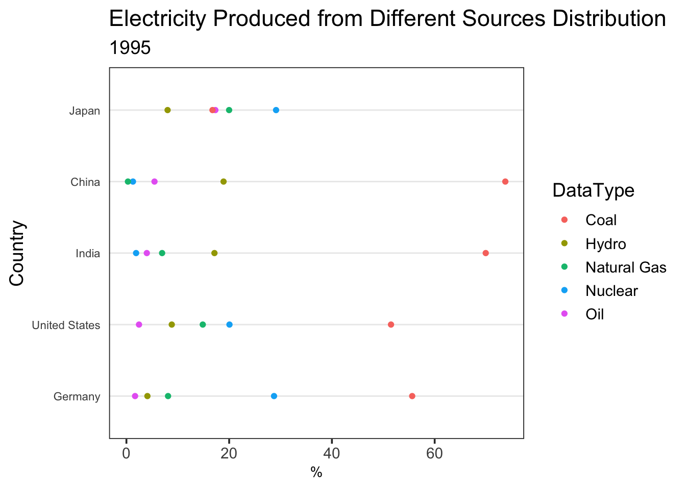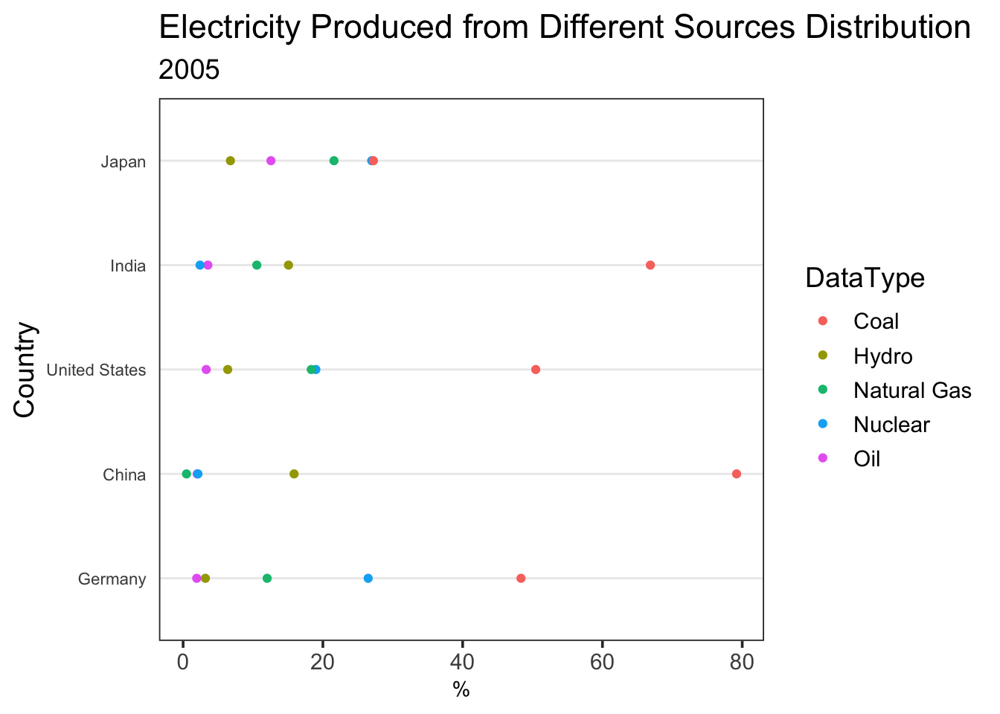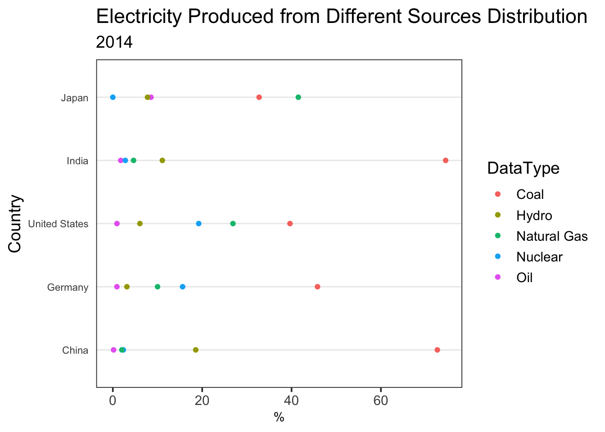
- Countries that has high CO2 emission in recent years like China and India rely mainly on coal to produce electricity which has a huge carbon footprint.
- The US used to have high percentage of electricity production using coal. However, in the more recent years, natural gas and nuclear power increased in electricity production.
- Moving towards environmentally friendlier methods of electricity production such as Nuclear, Hydro and Solar can help drastically reduce CO2 emissions.
- Investment into these methods is low right now as they might not be economically vaiable. As such governments of these countries should take responsibility to make these methods more profitable. This can be done by directly by implementing policies that promote these methods or by funding reseach and development that help make these methods profitable.